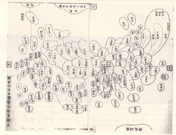

最近読んだ本：『地図の歴史 世界篇・日本篇』『興亡の世界史 人類文明の黎明と暮れ方 』『中国の大盗賊・完全版』
執筆日時：
『地図の歴史 世界篇・日本篇』
")
- 作者: 織田武雄
- 出版社/メーカー: 講談社
- 発売日: 2018/05/10
- メディア: Kindle版
- この商品を含むブログを見る
ちょっと古い本なのかな？ 現代の地図については物足りないところはあったけど、古今東西の地図を網羅してて大変面白かった。個人的にザックリまとめると
- 地図の役割：古代の地図は絵（よくわかんない辺境になると変な化け物がえがかれていたりｗ）や装飾が多くて、世界観と地理が未分化な感じだけど、それがだんだん「近代化」されていき、純粋に地理的な正確性を重視した図表になっていく。かといってグラフィカルなのがまったくなくなったわけではなく、ベースとなる近代的な地図の上に、特殊図としてさまざまな地図が展開されている。地図の歴史は、長い試行錯誤の末に本質へたどりつくための旅だったといえなくもないかな。もしかしたらほかの分野も、そういう目で見てみると面白いかもしれない
- 経度より緯度：緯度は比較的簡単にわかるけど、経度は精密なクロノメーター（つまり時計）が発明されるまでよくわかんなかった。古代の地図は、たいていアジアが長すぎる。アメリカが知られていなかった分や、地理的なイメージとしての遠さが反映されている。クロノメーターに関しては高校のときぐらいに読んだ本が面白かった記憶がある（経度への挑戦―一秒にかけた四百年）
- 和式地図で重要な位置を占める行基図：俺だったら「どの国から書き始めたのか」を集計してみるｗ

この手の本は何回か読んだことがあって、初めて得る知識はそれほど多くなかったけど、中国の地図について書かれているのは初めて読んだかもしれない。中国で地図の制作が遅れていたのはなぜなんだろう？
『興亡の世界史 人類文明の黎明と暮れ方 』
")
- 作者: 青柳正規
- 出版社/メーカー: 講談社
- 発売日: 2018/06/11
- メディア: Kindle版
- この商品を含むブログを見る
ところどころ面白かったけど、文明論としては若干陳腐かな。著者と問題意識を共有できてないだけって感じもあるけど。
とはいえ、『興亡の世界史』シリーズはだいたい買って損はないと思う。今なら安いみたいなのでお勧め。自分は全部買った。
『中国の大盗賊・完全版』
")
- 作者: 高島俊男
- 出版社/メーカー: 講談社
- 発売日: 2013/07/26
- メディア: Kindle版
- この商品を含むブログを見る
中国の歴史を一通り知ってる人にとっては新味はあまりないけど（盗賊っていっても小悪党をピックアップするんじゃなくて、地方割拠や王朝創設までやっちゃった系の悪党がメイン）、軽妙な語り口が魅力で結構楽しんで読めてしまった。
最終章の毛沢東は……そういう解釈でいいのかは知らんのだけど、クスッと笑わずには読めない。
 (ヤングキングコミックス)")
- 作者: 宮原るり
- 出版社/メーカー: 少年画報社
- 発売日: 2018/07/30
- メディア: Kindle版
- この商品を含むブログ (1件) を見る
マンガは『僕らはみんな河合荘』が終わっちゃって残念……でも、変に引っ張らずにいいところで終わった感じもする